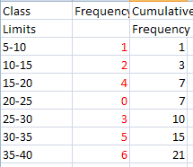

Linear interpolation is estimating a value in a set of data.
You are typically asked to find the value of a certain way through the data set.
You will need to find ther percentage through.
The first step is to look at your data and make sure you have the cumulative frequency, make sure the range of data is in the right form.
By this I mean, when the data is between two values, it makes sure there is no ignored values.
1<x<5,5<x<10 has nothing missing
1<x<4,5<x<10 has missing data, so needs to be changed to 1<x<4.5,4.5<x<10
You then need to work out the value (percentile) you want. This is done by getting the value you are asked to find,
and dividing it into your total amount of data.
We then use the formula which is:
Lower_class_boundary + (How_many_in)/(Group total) * class_width
1)Find an estimate mean value from the following set of data:
The class width has no missing values, so I will leave that as it is.
We have the cumulative frequency already here, and know that Σx = 21
We want the mean, which will be somewhere in the middle. 21/2 = 10.5th value.
This will be in the 30-35 set of data, as 10.5 is included in 15.
This is the lower class boundary of 30
how may in is the value we want-the value before so 10.5-10 =0.5
The total group which is 15
And its group width is 5
We will have: 30+ (10.5)/(15) *5 = 33.5